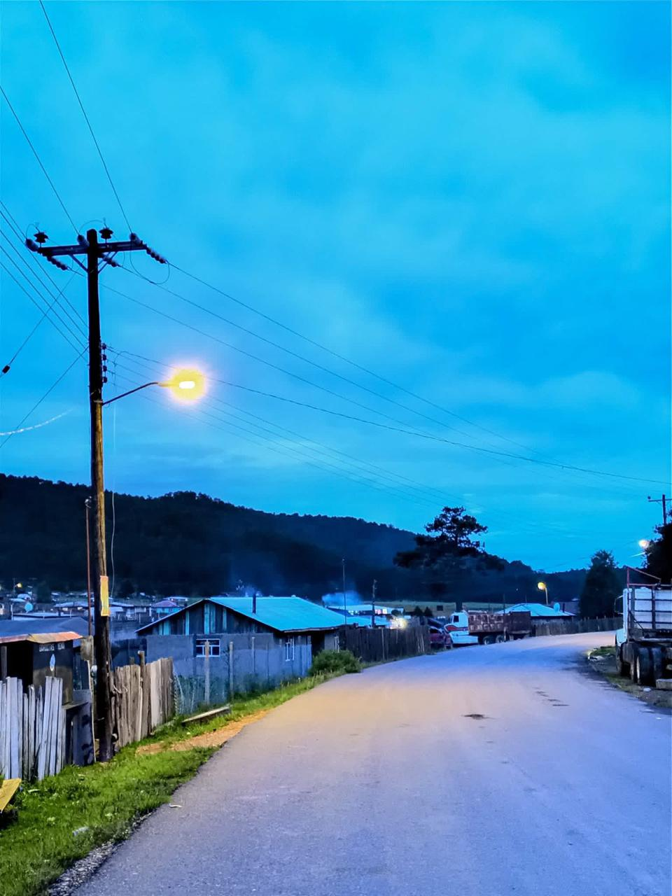
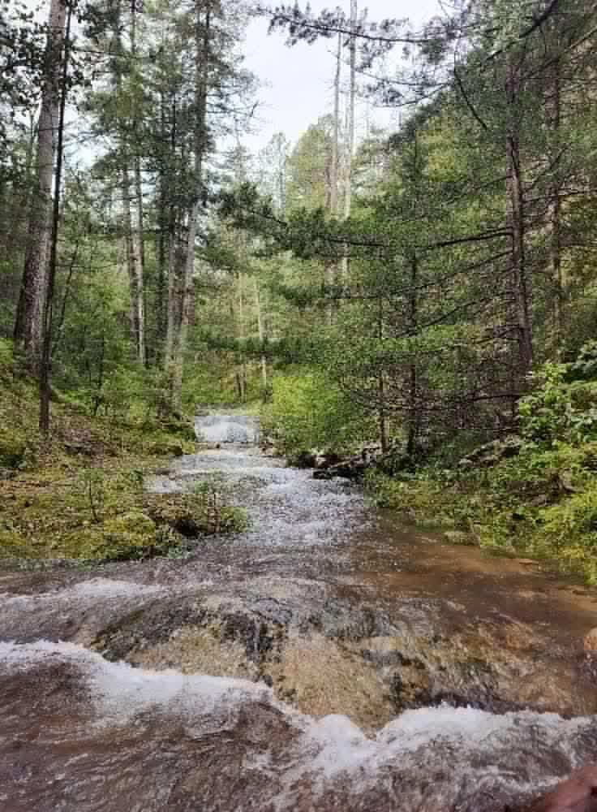
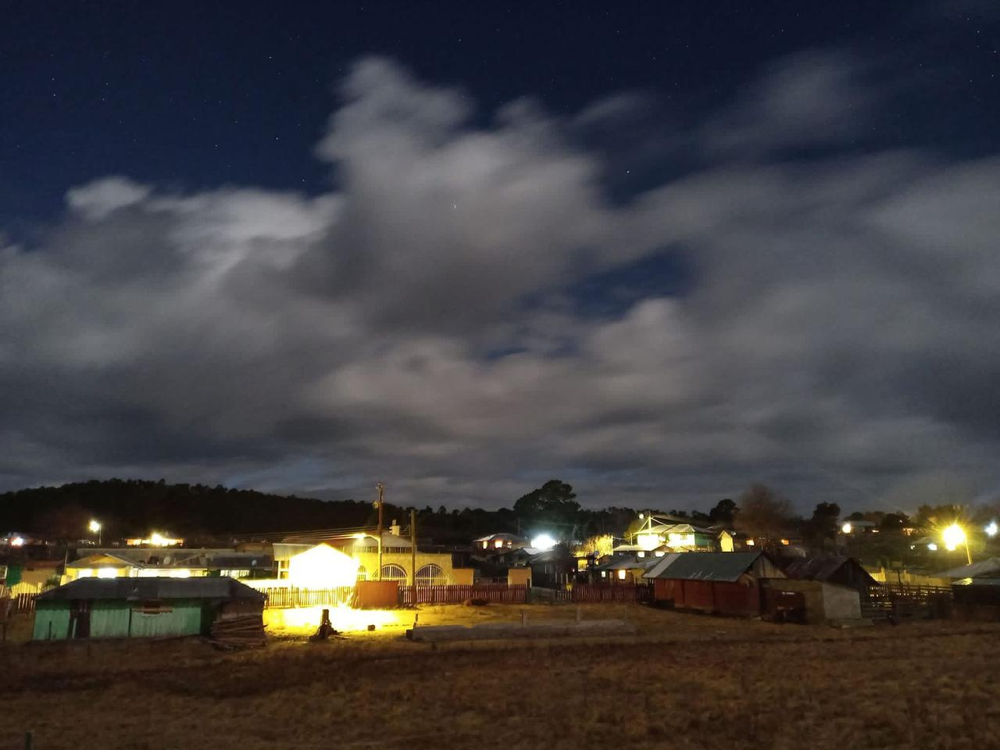
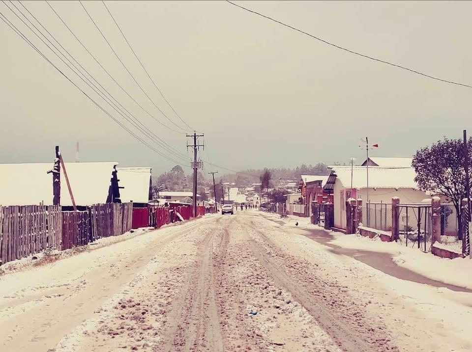
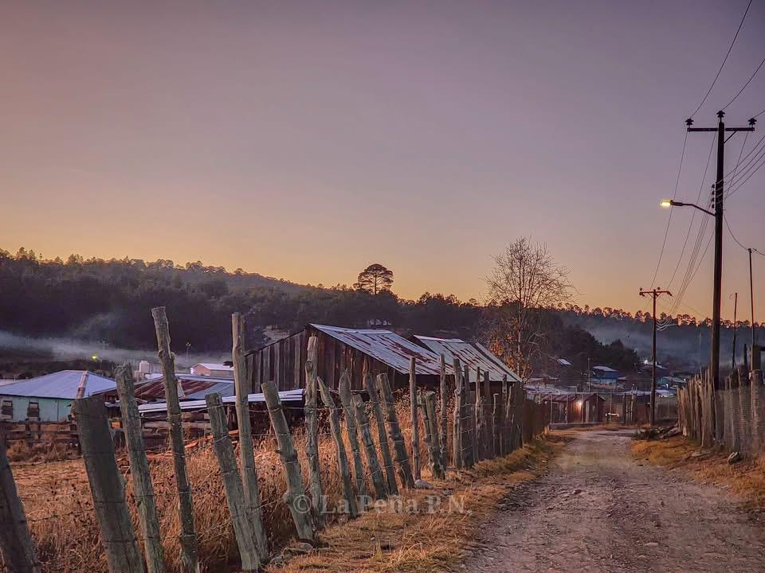
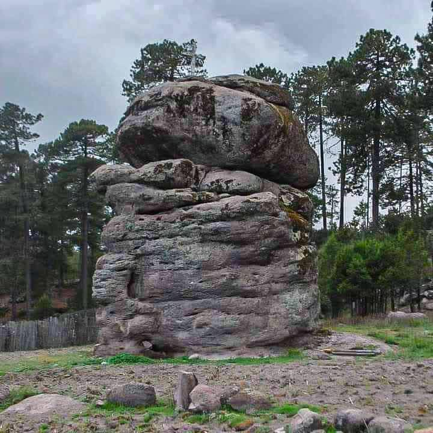

Un lugar turístico en Pueblo Nuevo, Durango
Bienvenidos a la comunidad de La Peña, ubicada en el municipio de Pueblo Nuevo, Durango. Este lugar se caracteriza por sus paisajes naturales, su tranquilidad y la hospitalidad de su gente. Es un sitio ideal para visitar y conocer más sobre la vida en la región.






La Peña es una comunidad del municipio de Pueblo Nuevo, Durango. Se caracteriza por su entorno natural rodeado de montañas y bosques. La comunidad conserva tradiciones y costumbres que forman parte de la cultura de la región. Las personas que visitan este lugar pueden disfrutar del paisaje, el clima agradable y la tranquilidad del ambiente.